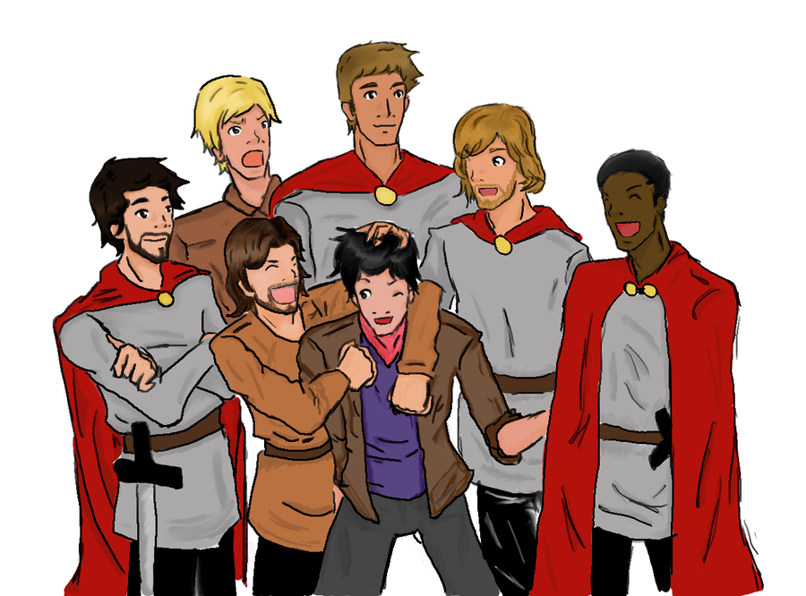

Merlin
Top Pick
Only a Boy by Riddell Lee
Merlin has changed Camelot forever, but while that part of his life is complete, destiny has a new task for him. Now he has to attend Hogwarts School of Witchcraft and Wizardry, hide the fact that he's the Merlin, and defeat a Dark Lord that's messing with magic he knows nothing about. This epic crossover perfectly fuses two fandoms that are meant to be together. Merlin flourishes as a Slytherin and adopts Draco as his new prat and target for snarky banter. He's the perfect match for Snape and the Weasley twins. Complete with twists, secrets, and heroics, this adventure truly is the best of both worlds.
Drama
The Warlock's Quickening by AntaresTheEighthPleiade
Merlin might have come to Camelot to master his magic, not to end the Purge, but he's not going to sit idly by while his kin suffer. Oh no. Whether it's releasing a chained dragon, smuggling sorcerers out of the city, or trying to change Arthur's mind, he's fighting back. Now. An in-progress series rewrite featuring a proactive Merlin. Morgana and Arthur benefit the most from this treatment, becoming more nuanced characters. The careful plotting and subtle character development allow this retelling to tower over others.
On Shaky Ground by Sydelle Rein
With the unknown identity of his sorcerer-protector plaguing him, Arthur is unsure how to deal with this new knowledge. Meanwhile, a series of mysterious earthquakes is threatening the safety of Camelot. This series, set during season two, has the suspense, action, and banter of a typical Merlin episode but with a more perceptive Arthur who undergoes a profound transformation.
The Other Side of the Edge by Ultra-Geek
Arthur tries to talk Merlin out of a long fall with a sudden stop, and then gets a little more information than he bargained for. So often, fics involving suicidal thoughts are full of overwrought teenage angst that romanticizes mental illness, but this beautifully written oneshot is a powerful and mature response in which we get a glimpse at what true greatness is.
The Prophecy by Viking Song
Uther learns Arthur is the Once-and-Future-King of prophecy and declares him a traitor, forcing him to flee with Merlin. The catch? Arthur has no idea who Emrys is and no desire to fulfill the prophecy. Told in short, rapid-fire chapters, this adventure gives an utterly original take on the formation of the Round Table. Civil war, ethical quandaries, long-distance romance, and deadly secrets provide an endless supply of suspense that will keep you glued to the page.
Canis, Corvus, Curses by SkywardShadow
Merlin is an ancient warlock with trust issues and a shapeshifting problem. Arthur is an ex-king who sometimes turns into a bird and isn't especially happy about it. Mordred is a teenage runaway hoping for some magic lessons-and oh, yeah, he may or may not have tried to kill them both in a past life. Well, isn't this awkward. A bizarre premise executed perfectly. Utterly creative, it's a testament to love and second chances with captivating dialogue and characterization.
Humor
The Secrets We Keep by Feste the Fool
It's not just Merlin. In fact, it's never been just Merlin. Camelot is rife with secrets and, one by one, they are all being exposed. This comedic adventure fills in some of the show's gaps by drawing on Arthurian legend, including origin stories for several of the knights. Its Golden Age of Camelot is both lighthearted and heartwarming.
The Birdbrain and the Bees by AntaresTheEighthPleiade
Merlin is a truly atrocious liar. Hunith despairs. A farcical oneshot in which Merlin's lies and Arthur's ensuing search for the truth are taken to the ridiculous extreme. It is impossible to get through without laughing.
A Friend in Need by Elfpen
Gwaine has a problem. A big problem. A possibly treasonous, very dangerous, uncontrollable problem that may or may not get him killed and put all of his friends in danger. He once told Merlin that he was the only friend he had, and maybe that isn't true anymore. But Merlin is still the only friend he can trust. And he needs help. This reveal fic, equal parts humorous and sincere, perfectly captures the friendship between Merlin and Gwaine that got overlooked in later seasons.
Romance
The Raven by Thegreenconsultingdragonlord
Will's antics had always been ridiculous, but when one of his dumb capers causes Merlin to inadvertently fall in love with a boy on the internet, things start getting a little complicated. This modern day AU, based on the movie "You've Got Mail," repurposes the show's forbidden romance and secret identity themes and, unlike many modern AUs, retains the element of magic. The delightful band of brothers (plus Gwen) round out this classic romantic dramedy.